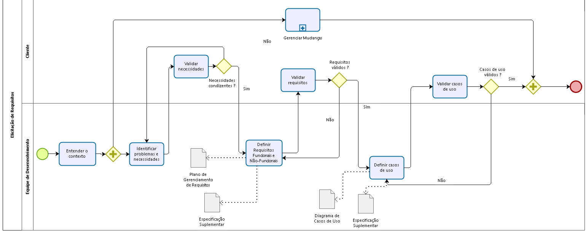
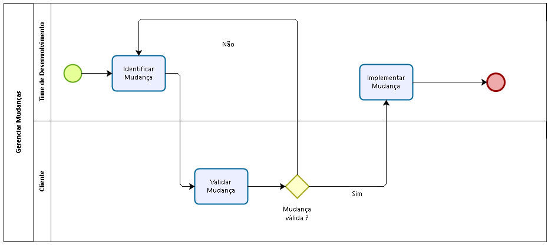

Gerenciamento de Requisitos
Histórico de Revisões
| Data | Versão | Descrição | Autor |
|---|---|---|---|
| 21/03/2017 | 0.1 | Inserção do tópico Introdução | Vinícius Carvalho |
| 13/04/2017 | 0.2 | Adição do processo e do gerenciamento dos requisitos | João Paulo Busche e Caio Felipe |
| 18/04/2017 | 1.0 | Finalização do Plano de Gerenciamento de Requisitos | João Paulo Busche |
| 19/04/2017 | 1.1 | Revisão do Plano de Gerenciamento de Requisitos | João Paulo Busche |
1. Introdução
2. Processo de coleta e de documentação dos requisitos
3. Gerenciamento de priorização e configuração dos requisitos
4. Matriz de rastreabilidade
5. Descrição dos Elementos da Matriz
6. Referências bibliográficas
1. Introdução
Este documento descreve os requisitos e seus tipos, como também relata como será feito a coleta de informações dos requisitos do produtos usado para avaliar, relatar e controlar mudanças. Os tópicos abortados serão processo de coleta e documentação dos requisitos, gerenciamento de priorização e configuração dos requisitos e a matriz de rastreabilidade e sua descrição.
1.1 Finalidade
Este documento tem como finalidade demonstra como será feito o plano de gerenciamento de requisitos do projeto Sistema de Inteligente de Gestão de Sala (SIGS), descrevendo como o projeto irá configurar o documento de requisitos, quais são os tipos de requisitos como também sua rastreabilidade.
1.2 Definições, Acrônimos e Abreviações
SIGS - Sistema Inteligente de Gestão de Sala
UnB - Universidade de Brasília.
2. Processo de Coleta e de Documentação dos Requisitos
Os requisitos deverão ser coletados baseado no processo abaixo e classificados nos seguintes níveis de rastreabilidade:
Problema: São os níveis mais alto de abstração dos requisitos, geralmente descrevem qual a causa, que levou a ser requisitado uma solução de software.
Necessidades: São as causas que geram os requisitos, geralmentes descrevem contextos onde visam resolver determinado problema.
Requisitos Funcionais e Não-Funcionais: São os requisitos que mapeiam as funcionalidades de um sistema, baseados nas necessidades do problema.
Casos de Uso: São os requisitos de níveis mais baixos de um sistema, geralmente caracterizados como as ações que um usuário terá no sistema.


2.1 Descrição das Atividades do Processo
2.1.1 Processo "Elicitação de Requisitos"
-
Entender o contexto: Refere-se à atividade de conhecer o contexto do cliente, área de atuação do sistema, formas de realização, etc.
-
Identificar problemas e necessidades: Refere-se à atividade de analisar o processo de trabalho do cliente dentro do seu contexto, identificar falhas, gargalos e pontos de melhoria, mapeando-as em grandes problemas, e quebrando-os em necessidades que precisam ser supridas para solução dos mesmos.
-
Validar necessidades: Refere-se à atividade de apresentar as necessidades levantadas para o cliente, afim de identificar questões que não são realmente pertinentes ao contexto desejado, ou a falta de alguma necessidade que precise ser suprida.
-
Definir requisitos funcionais e não-funcionais: Refere-se à atividade de quebrar as necessidades em requisitos de software, tanto em níveis funcionais quanto em níveis não-funcionais, rastreando-os às suas respectivas necessidades e problemas.
-
Validar requisitos: Refere-se à atividade de apresentar os requisitos levantados para o cliente, afim de identificar erros ou falta de determinados requisitos essenciais para suprir as necessidades levantadas.
-
Definir casos de uso: Refere-se à atividade de analisar os requisitos e quebrá-los em casos de uso, de forma a obter funcionalidades a serem implementadas pela equipe de desenvolvimento.
-
Validar casos de uso: Refere-se à atividade de apresentar o diagrama de casos de uso, de forma a possibilitar uma visão operacional do sistema ao cliente, permitindo que ele avalie se atingiu todos os pontos esperados.
2.1.2 Subprocesso "Gerenciar Mudanças"
-
Identificar Mudança: Refere-se à atividade de identificar mudanças a partir de determinadas necessidades do cliente que podem, por ventura, vir a ser inseridas ou retiradas do sistema.
-
Validar Mudança: Refere-se à atividade de apresentar a nova proposta de mudança ao cliente em todos os níveis de abstração dos requisitos, a fim de validar a nova proposta.
-
Implementar Mudança: Refere-se à atividade de realmente efetuar a mudança em relação a rastreabilidade dos requisitos, diagramas e referentes.
3. Gerenciamento de Priorização e Configuração dos Requisitos
A priorização dos requisitos é efetuada a partir dos esclarecimentos prestados pelo cliente a respeito dos principais problemas encontrados, e como eles se relacionam entre si. Visto isso, a equipe é capaz de identificar quais requisitos serão priorizados em detrimento de outros.
Os indicadores que manterão a navegabilidade e a rastreabilidade serão representados pelas letras P, que representa os problemas, N, que representa as necessidades do projeto, RF, que representa os requisitos funcionais do sistema e por fim UC que representa os casos de uso do software a ser implementado. Os indicadores serão incrementais, assim possibilitando a sua rastreabilidade, por exemplo o caso de uso possui uma ligação com o requisito RF1.1.1, que possui ligação com a necessidade N1.1, que possui ligação com o problema P1.
4. Matriz de Rastreabilidade

5. Descrição dos Elementos da Matriz
5.1 Problemas
| Identificador | Nome | Descrição |
|---|---|---|
| P1 | Alocação de Salas Ineficiente | Este problema representa a ausência de uma alocação de salas feita de maneira eficiente onde o processo atual gera resultados considerados problemáticos tanto para os alunos, quanto para a organização como um todo. |
| #### 5.2 Necessidades | ||
| Identificador | Nome | Descrição |
| --- | --- | --- |
| N1.1 | Controle de Responsáveis pelas Alocações | Esta necessidade representa a situação onde cada responsável por uma alocação em determinado departamento (coordenador do curso), deve ter sua jurisdição respeita, sendo o único com poder de alocar salas. |
| N2.1 | Utilização Coerente do Espaço Alocado | Esta necessidade representa a situação gerada ao selecionar-se salas de aula incoerentes com a real necessidade, isto é, com capacidade menor ou maior do que a necessária e com equipamentos (mesas, cadeiras, projetores, etc) que não atendem corretamente aquela turma. |
| N3.1 | Reduzir Distâncias entre Aulas para os Alunos | Esta necessidade representa um situação gerada ao alocar-se as salas de aula, onde não é considerado as distâncias das salas alocadas para um mesmo aluno, o que ocasiona um deslocamento excessivo do mesmo em um curto intervalo de tempo. |
| N4.1 | Redução do Trabalho no Processo de Alocação | Esta necessidade representa a situação gerada durante o processo de alocação, visto que o mesmo hoje ocorre de maneira manual ou através de ferramentas que demandam um tempo e utilização maior (planilhas, etc) para realizar as operações esperadas. |
5.3 Requisitos
| Identificador | Nome | Descrição |
|---|---|---|
| RF1.1.1 | Autenticar Usuário | O Sistema deve solicitar o usuário e autenticar a sessão do mesmo, após a aprovação. |
| RF2.1.1 | Controlar Cadastro | O Sistema deve autorizar o Assistente Administrativo de editar as informações dos usuários e aprovar seu cadastro. |
| RF3.2.1 | Controlar Sala | O Sistema deve permitir o Assistente Administrativo a manter as informações das salas. |
| RF4.2.1 | Controlar Turmas | O sistema deve permitir que os usuários possam manter as informações das turmas. |
| RF5.3.1 | Controlar Alocações | O sistema deve permitir que os usuários possam gerenciar as alocações feitas, e que o Assistente Administrativo controle as de espaço comum. |
| RF6.4.1 | Orientar Alocações | O sistema deve permitir que os usuários possam visualizar as alocações e geram seus respectivos relatórios. |
5.4 Casos de Uso
| Identificador | Nome | Descrição |
|---|---|---|
| UC.1.2.1.1 | Gerenciar Usuário | Esse caso de uso permite que todos os usuários com cadastro aprovado possam editar, remover e visualizar seus dados, com exceção do assistente administrativo que pode remover e visualizar os dados de todos os usuários. |
| UC.2.1.1.1 | Manter Sessão de Usuário | Esse caso de uso permite que todos os usuários com cadastro aprovado possam logar e deslogar do sistema. |
| UC.3.1.1.1 | Solicitar Cadastro | Esse caso de uso permite ao usuário comum preencher dados de seu cadastro e solicitar sua aprovação. |
| UC.4.2.1.1 | Aprovar Cadastro de Usuário | Esse caso de uso permite que o assistente administrativo possa aprovar uma solicitação de cadastro feita por um usuário comum. |
| UC.5.3.2.1 | Administrar Salas | Esse caso de uso permite ao assistente administrativo adicionar, remover e alterar dados de uma sala. |
| UC.6.4.2.1 | Manter Turma | Esse caso de uso permite ao coordenador e auxiliar do departamento cadastrar, editar, visualizar e remover uma turma. |
| UC.7.5.3.1 | Manter Alocações | Esse caso de uso permite que o coordenador e o auxiliar do departamento possam alocar e realocar disciplinas em salas que são ditas do departamento, que pode ser referente ao curso no caso do coordenador.E no caso do assistente administrativo alocar e realocar disciplinas em salas de espaço comum. |
| UC.8.6.4.1 | Visualizar Alocação | Esse caso de uso permite ao assistente administrativo, coordenador e auxiliar do departamento visualizarem as salas já alocadas à uma determinada disciplina e seus respectivos dias e horários. |
| UC.9.5.3.1 | Solicitar Alocação em Espaço Comum | Esse caso de uso permite ao coordenador e ao auxiliar do departamento solicitarem alocação de disciplinas, onde irão pré-aloca-las a fim de serem aprovadas pelo assistente administrativo e serem organizadas e alocadas em espaço comum. |
| UC.10.5.3.1 | Gerenciar Solicitações de Espaço Comum | Esse caso de uso permite ao assistente administrativo desalocar uma sala de uma disciplina, alocar disciplinas em salas vazias e alterar qualquer instância de alocação, após feita uma solicitação pelo coordenador ou auxiliar do departamento. |
| UC.11.6.4.1 | Gerar Relatório | Esse caso de uso permite ao assistente administrativo, coordenador e auxiliar do departamento,gerarem relatórios referentes à alocação de sala. |